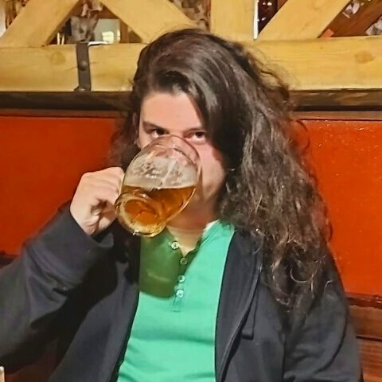
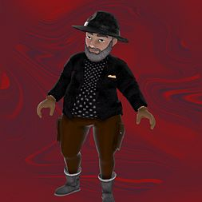
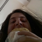

Lukymbo
.cz
Moje účty:
Youtube
> Steam
> Xbox
> Twitch
>Moje programy
Programování mě vždy bavilo a programů jsem už za ta léta vytvořil spoustu. Některé jako zadání od různých učitelů, některé jako výplod moji hlavy v nudných chvilkách...
Moje mapy v Counter-Striku
CS:GO a nyní i CS2 jsou moje oblíbené hry a vždy mě tak nějak lákalo vyzkoušet si tvorbu map do této hry. To jsem po zakoupení programu za 14€ zvládl a dnes k mému jménu patří 3 celé CS:GO mapy.
Moje youtube videa
Na youtube točím už od roku 2015 a stále mě to neomrzelo. Ne, že bych tedy točil nějak pravidelně nebo tak, ale zkrátka občas něco vydám. Sice nemám žádný dosah ani pořádná zhlédnutí, ale baví mě to, což je hlavní...
Lahodný nápoj
Kdysi jsem bez nějakého většího úmyslu vytvořil fotku s jedním kamarádem, dal ji na instagram a dal tomu popisek "Lahodný nápoj se samotným ..." a tím nevědomky vytvořil tradici...
Moje oblíbené hry
Na youtube točím už od roku 2015 a stále mě to neomrzelo. Ne, že bych tedy točil nějak pravidelně nebo tak, ale zkrátka občas něco vydám. Sice nemám žádný dosah ani pořádná zhlédnutí, ale baví mě to, což je hlavní...